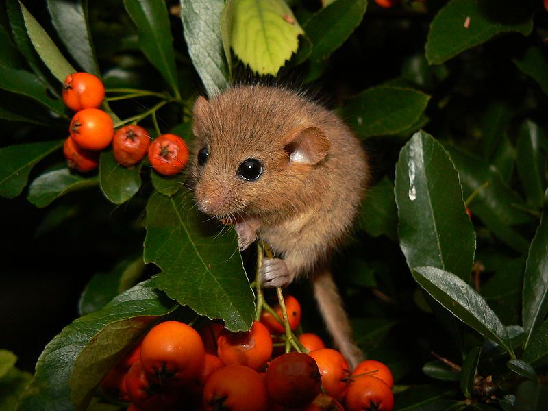

Haselmaus
Muscardinus avellanarius
Zur Familie der Bilche (nicht zu den Mäusen) gehört die Haselmaus. Sie baut ihr Kugelnest aus trockenem Laub gerne in dornenbewehrte Hecken und Waldrandgehölze, wo sie ihre Lieblingsspeise – Nüsse und Beeren – findet. Wie die anderen „Schläfer“ hält sie ihren langen Winterschlaf in einem Frostsicheren Unterschlupf. Durch den buschigen Schwanz unterscheidet sie sich gut von der Zwergmaus, mit der sie manchmal verwechselt wird.